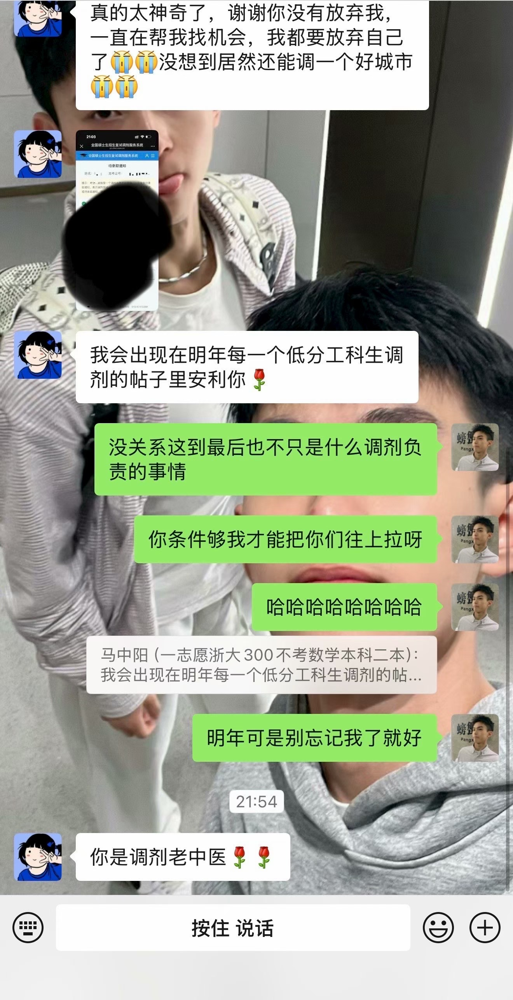
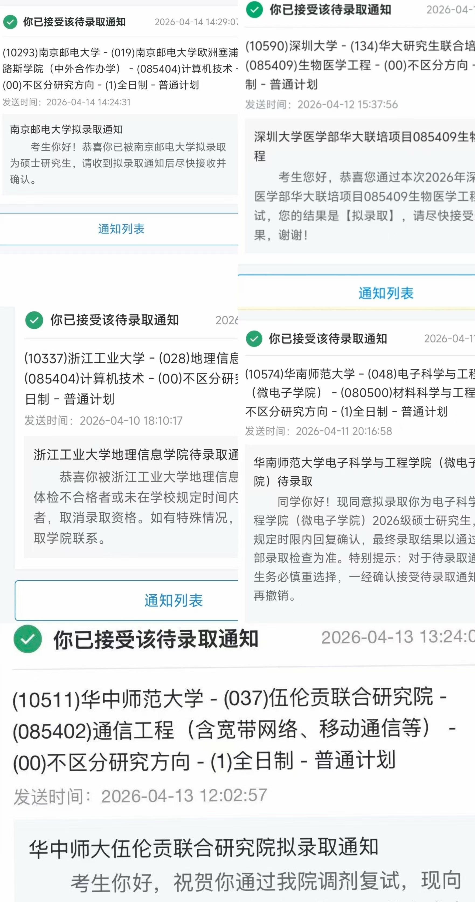

收集考生画像
分数、专业代码、本科层次、一志愿、项目经历、地域偏好等输入进入结构化表单。
LangGraph · Consulting System
为提升个人考研咨询服务效率而自研的 AI Agent 工作系统。AI 辅助采集、人工核实决策，结合 Markdown 记忆库与自己一套完善分工skill、mcp组合拳，把单次咨询响应从 30 分钟压缩到约 5 分钟。通过 LangGraph 构建半自动化工作流，实现调剂信息采集、智能分析、记忆存储、动态优化等模块协同。
择校agent 负责聚合和初筛；顾问agent负责官方源核验与最终建议，避免把不确定信息包装成结论。
Outcome
Workflow
分数、专业代码、本科层次、一志愿、项目经历、地域偏好等输入进入结构化表单。
联网搜索与院校官网信息聚合，快速建立可疑似匹配学校池。
关键调剂信息回到研招网、院校官网或学院公告核验，避免模型幻觉影响决策。
一对一客户建立 Markdown 记忆库，后续多轮咨询可持续更新策略与限制条件。
Modules
追踪目标院校、专业代码、调剂动态和官方公告，输出待核验候选项。
结合分数段去向、院校层次、考生背景和项目经历，生成策略草案。
将高频咨询流程固定成提示词模板与检查清单，减少重复劳动。
一对一全程服务使用专属记忆库，批量咨询使用标准化输出。
新规则可回写到总要求文档，工作流随服务经验持续进化。
客户记录优先本地化管理，公开展示时应只放脱敏样例。
Project Materials


来自学生调剂择校上岸·不完全截图